보이다가, 감쪽같이 사라집니다.
진짜 천처럼 움직입니다
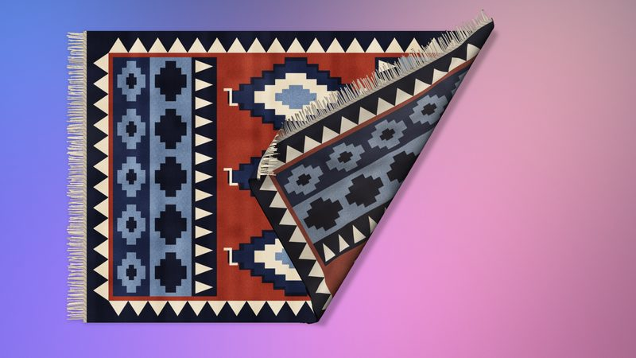
접고 말기
어느 부분이든 잡고 드래그하면 들어 올리거나 접거나 말 수 있습니다. 접힌 부분을 다시 드래그하면 되돌릴 수 있고, 이중 클릭하면 전체가 반듯하게 펴집니다.
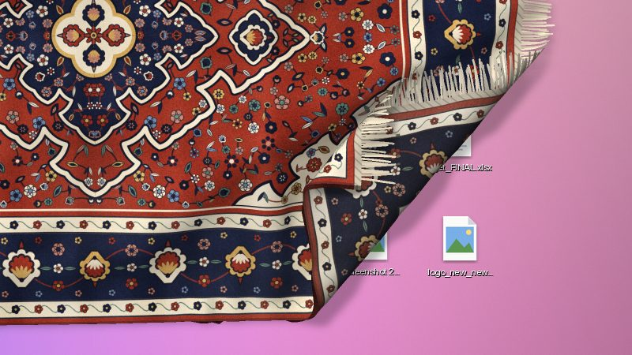
아이콘 위를 덮습니다
데스크탑 아이콘마다 러그 아래에 볼록한 부분이 생깁니다. 아이콘이 쌓여 있으면 더 크게 볼록해집니다.
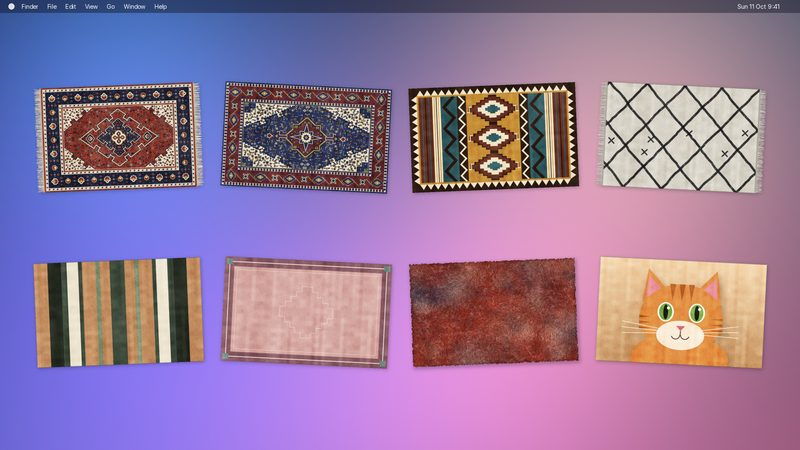
나만의 디자인
페르시안, 헤리즈, 킬림, 베르베르, 스트라이프, 테두리형, 비치 타월, 현관 매트, 샤기 중에서 패턴을 고르고, 색상, 술 장식, 마모, 털 길이도 원하는 대로 정할 수 있습니다.
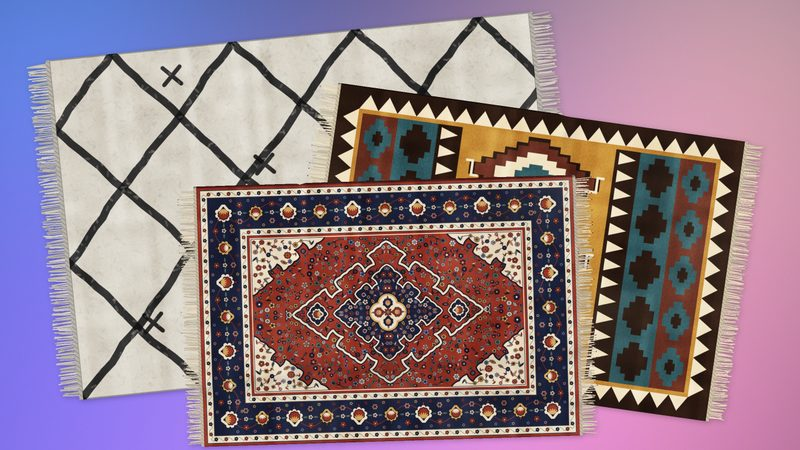
여러 장 겹쳐 놓기
러그는 서로 겹쳐 놓이고, 움직이는 러그가 맨 위로 올라옵니다.
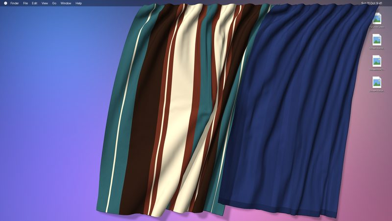
커튼도 있습니다
메뉴 막대에 커튼을 걸 수 있습니다. 메뉴 막대를 따라 밀고, 열거나 닫고, 휙 흔들어도 커튼은 다시 주름진 모양으로 늘어집니다. 벨벳, 리넨, 스트라이프, 테두리형 또는 나만의 사진으로 꾸밀 수 있습니다.
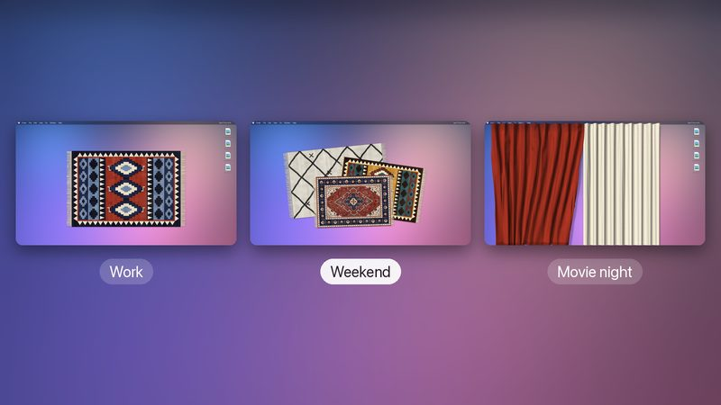
여러 가지 배치
업무용, 주말용처럼 기분에 따라 러그나 커튼 세트를 따로 마련해 두고, 메뉴 막대에서 클릭 한 번으로 전환할 수 있습니다.
직물 소리. 움직일 때는 부드럽고 먹먹한 울 스치는 소리가, 접힌 부분이 내려앉을 때는 살짝 ‘툭’ 하는 소리가 납니다. 클릭 한 번으로 끌 수 있습니다.
Mac에 부담 없이 가볍습니다. 가만히 놓인 러그는 CPU를 거의 사용하지 않습니다. 하루 종일 데스크탑에 있어도 팬이 돌지 않고 배터리도 닳지 않습니다.
Tapis 후원하기
Tapis는 무료입니다. 데스크탑이 조금 더 아늑해졌다면 Ko-fi에서 커피 한 잔을 사 주시거나 GitHub에서 후원하실 수 있습니다.
사용 방법
모든 조작은 러그 위에서 마우스로 이루어집니다.
접기
러그의 어느 부분이든 잡고 드래그하면 들어 올리거나 접거나 말 수 있습니다. 접힌 부분은 놓은 그대로 유지됩니다.
접힌 부분을 다시 드래그하면 되돌릴 수 있습니다. 이중 클릭하면 러그 전체가 반듯하게 펴집니다.
길게 눌러 편집
러그를 0.5초 동안 길게 누르면 선택되며, 편집하는 동안에는 접히지 않습니다.
드래그하여 이동하고, 모서리를 드래그하여 크기를 조절하고, 위쪽 손잡이를 드래그하여 회전합니다(⇧ 키를 누른 채 돌리면 15° 단위로 맞춰집니다). 편집이 끝나면 러그나 다른 곳을 다시 클릭합니다.
나만의 러그로
선택한 러그 아래에는 작은 도구 막대가 나타납니다. 디자인 버튼을 누르면 패턴, 색상, 술 장식, 마모, 털 길이를 설정할 수 있습니다.
도구 막대에서 러그를 90° 회전하거나, 반듯하게 펴거나, 제거할 수도 있습니다.
아이콘 아래로 밀어 넣기
기본적으로 러그는 데스크탑 아이콘 위에 놓이고, 아이콘 때문에 러그가 볼록해집니다. 파일 밑에 까는 매트처럼 아이콘 아래에 놓을 수도 있습니다.
도구 막대에서 아이콘 아래에 배치 항목을 선택합니다. 나중에 러그를 다시 편집하려면 메뉴에서 러그 재배치 항목을 선택합니다.
러그 더 추가하기
메뉴에서 러그 추가 항목(⌘N)을 선택합니다. 러그는 서로 겹쳐 쌓이고, 움직이는 러그가 맨 위로 올라옵니다.
잠시 데스크탑을 비우려면 러그 보기 항목의 체크를 해제합니다.
커튼 걸기
메뉴에서 커튼 항목을 선택하면 메뉴 막대에 커튼이 걸립니다. 옆으로 드래그하면 메뉴 막대를 따라 미끄러지고, 다른 커튼 쪽으로 드래그하면 그 커튼을 밀어냅니다.
⌘ 키를 누른 채 이중 클릭하면 커튼이 열리거나 닫히고, 그냥 이중 클릭하면 반듯하게 펴집니다. 길게 누르면 양옆의 손잡이로 크기를 조절할 수 있습니다. 커튼 추가 항목으로 커튼을 하나 더 걸 수 있습니다.
배치 전환하기
배치란 러그 또는 커튼의 묶음입니다. 업무용과 주말용을 따로 두고, 메뉴에서 클릭 한 번으로 전환할 수 있습니다.
배치 관리… 항목에서 배치를 생성, 복제, 이름 변경, 삭제할 수 있습니다. 모든 변경 사항은 자동으로 저장됩니다.
패턴 고르기
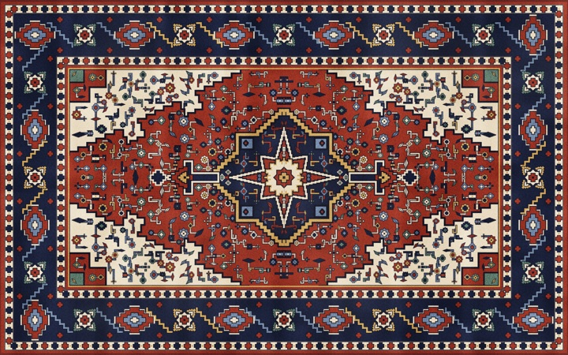
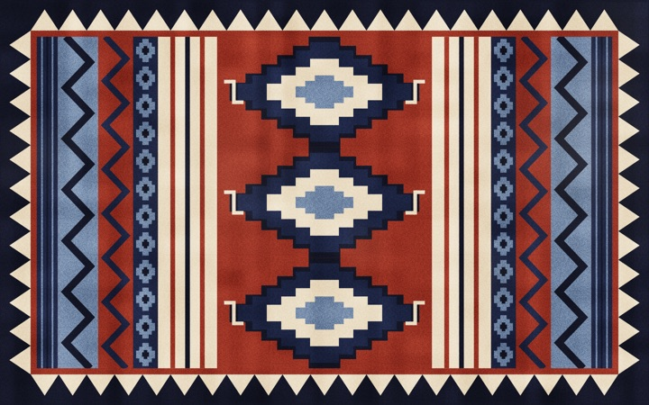
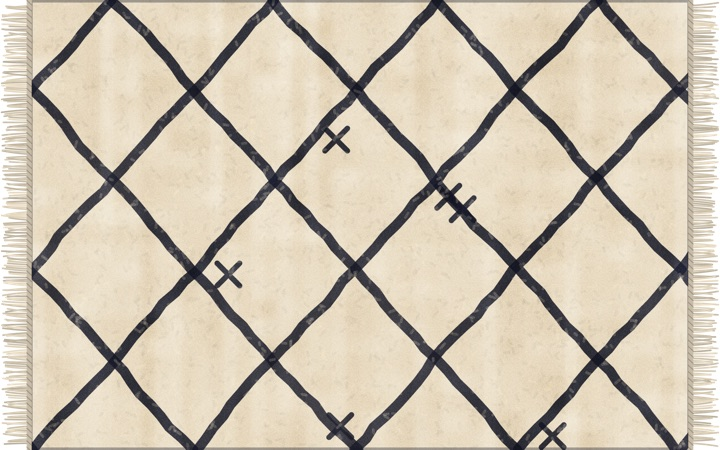
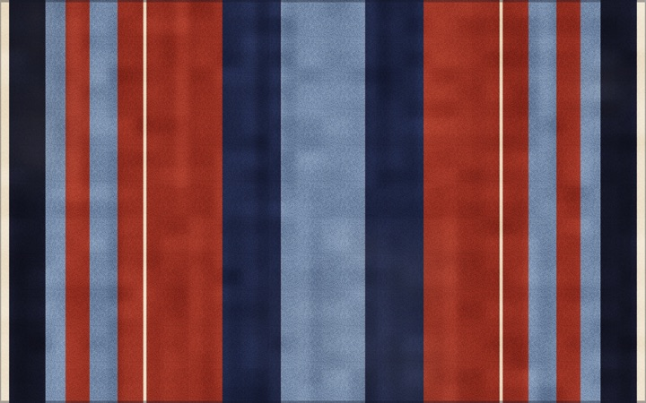
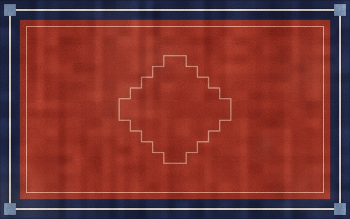
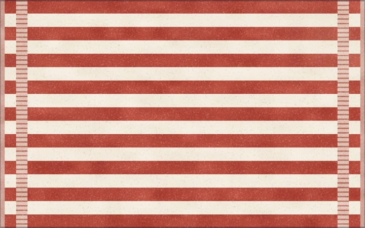
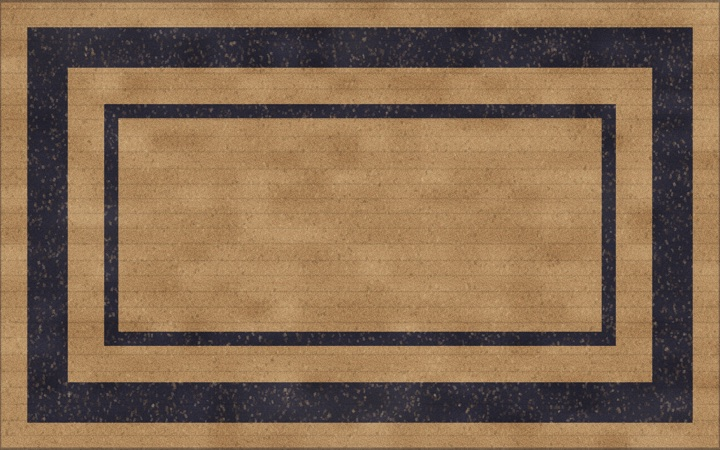
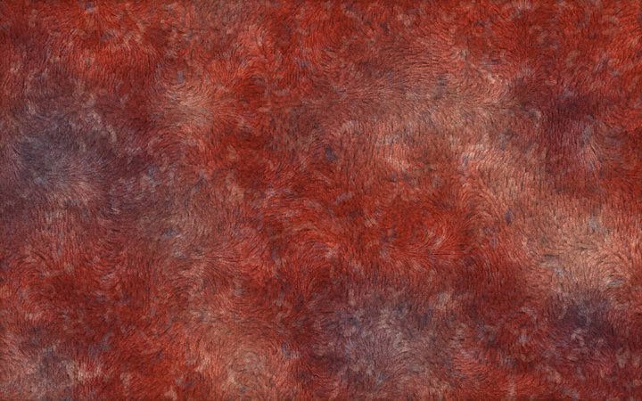
설치
무료입니다. Apple 실리콘이 탑재된 Mac에서 macOS 14 이상이 필요합니다.
다운로드
릴리스 페이지에서 최신 DMG를 받습니다.
응용 프로그램 폴더로 드래그
DMG를 열고 Tapis를 응용 프로그램 폴더로 드래그합니다.
실행하기
응용 프로그램 폴더에서 Tapis를 엽니다. 메뉴 막대에 Tapis 아이콘이 나타납니다.
최신 상태로 유지
새 버전이 나오면 Tapis가 알려 주고 업데이트를 제안합니다.
개인정보 보호를 고려한 설계
계정도, 분석 도구도 없습니다. 네트워크 연결은 업데이트 확인뿐이며, 사용자에 대한 정보는 아무것도 보내지 않습니다. 업데이트 여부는 언제나 사용자가 결정합니다. Tapis는 전적으로 Mac에서만 실행되며, 러그와 커튼은 절대 Mac 밖으로 나가지 않습니다.
Mac에 저장
러그, 커튼, 디자인, 배치는 오직 Mac에만 보관됩니다. 아무것도 동기화되거나 업로드되지 않습니다.
데스크탑은 온전히 사용자의 것
Tapis는 러그가 아이콘 위를 덮을 수 있도록 하기 위해서만 Finder에 아이콘 위치를 묻습니다. 이 정보는 절대 Mac 밖으로 나가지 않습니다.
확인은 단 한 가지, 업데이트뿐
새 버전이 있는지 확인하기 위해 Tapis는 GitHub의 공개 목록을 읽습니다. 사용자나 사용자의 Mac에 대한 정보는 아무것도 보내지 않습니다.
영감
Tapis는 Terkel의 트윗에서 영감을 받았습니다. 정말 재미있는 아이디어였고, 만드는 것도 그만큼 즐거웠습니다.